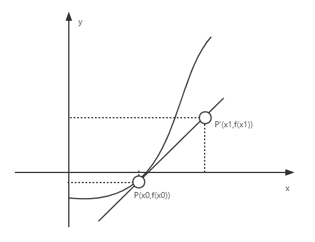
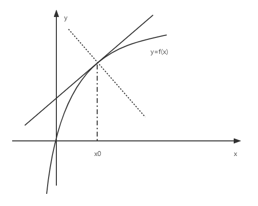
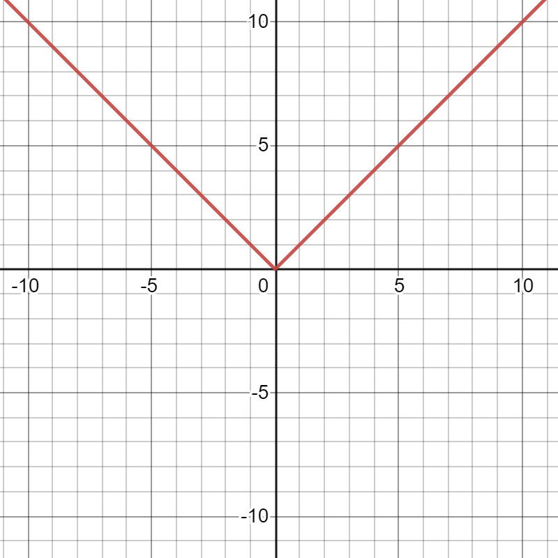

§2.1 导数的概念
引例：曲线的切线在 xOy 平面上，y=f(x) 在 P(x0,y0) 的切线

P′(x1,y1)，PP′ 割线，P′ 尽量接近于P
k′=x1−x0y1−y0=ΔxΔy
k=Δx→0limΔxΔy（0/0型）
一、导数的定义
- f(x) 在 U(x0) 有定义，若满足 Δx→0limΔxΔy=Δx→0limΔxf(x0+Δx)−f(x0) 存在，则称 y=f(x) 在点 x0 可导，记作 f′(x0)，否则，称f(x) 在 x0 不可导
f′(x0)=Δx→0limΔxf(x0+Δx)−f(x0)=h→0limhf(x0+h)−f(x0)=x→x0limx−x0f(x)−f(x0)
- 也常记为 dxdy∣x=x0 或 dxdf∣x=x0（导数/微商）
例：假设 f′(x0) 存在，计算
- h→0limhf(x0−h)−f(x0)=−h→0lim−hf[x0+(−h)]−f(x0)=−f′(x0)
- h→0limhf(x0−h)+f(x0+2h)=h→0lim[hf(x0−h)−f(x0)−22hf(x0+2h)−f(x0)]=−f′(x0)−2f′(x0)=−3f′(x0)
- f(0)=0f′(0)=k0x→0limxf(x)=k0
- 若 f(x) 在 (a,b) 内每一点都可导，则称 f(x) 在 (a,b) 内可导，记为 y′ 或 f′(x) 或 dxdy 或 dxdf
f′(x0)=f′(x)∣x=x0f′(x)=h→0limhf(x+h)−f(x)
例：
-
y=C（常数），y′=0
证：y′=h→0limhf(x+h)−f(x)=h→0limhC−C=0
-
y=xα（指数函数），y′=αxα−1（x=0）
证：y′=h→0limh(x+h)α−xα=h→0limxαh[(1+xh)α−1]=αxα−1
-
y=αx（幂函数，α>0且a=1），y′=αxlnα
证：y′=h→0limhαx+h−αx=h→0limhαx(αh−1)=αxlnα
特别地，(ex)′=ex
-
y=logax（对数函数，α>0且a=1），y′=xlnα1
证：y′=h→0limhloga(x−h)−logax=h→0limx⋅xhloga(1+xh)=xlna1
特别地，(lnx)′=x1
-
y=cosx，y′=−sinx
证：h→0limhcos(x+h)−cosh=h→0limh−2sin2x+h+xsin2h=−sinx
同理可得 (sinx)′=cosx
二、导数的几何意义

y=f(x)f′(x0)=k
- 切线方程 y−f(x0)=f′(x0)(x−x0)
- 法线方程 y−f(x0)=−f′(x0)1(x−x0)
例题
求 y=x3 与 y=31x+1 平行的切线方程
解：y′=3x2，设切点坐标 (x0,y0)
则有3x02=31，x0=±31
切点 (31,271) 或 (−31,−271) ，相对应的切线方程为 y−271=31(x−31) 或 y+271=31(x+31)
三、函数的可导和连续
例题
证明 y=∣x∣ 在x=0连续，但不可导

- y=x 在x=0连续 ⇒y=∣x∣ 在 x=0连续
- Δx→0+limΔx∣0+Δx∣−∣0∣=Δx→0+limΔxΔx=1
Δx→0−limΔx∣0+Δx∣−∣0∣=Δx→0−limΔx−Δx=−1
∴f−′(0)=f+′(0)，f′(0) 不存在